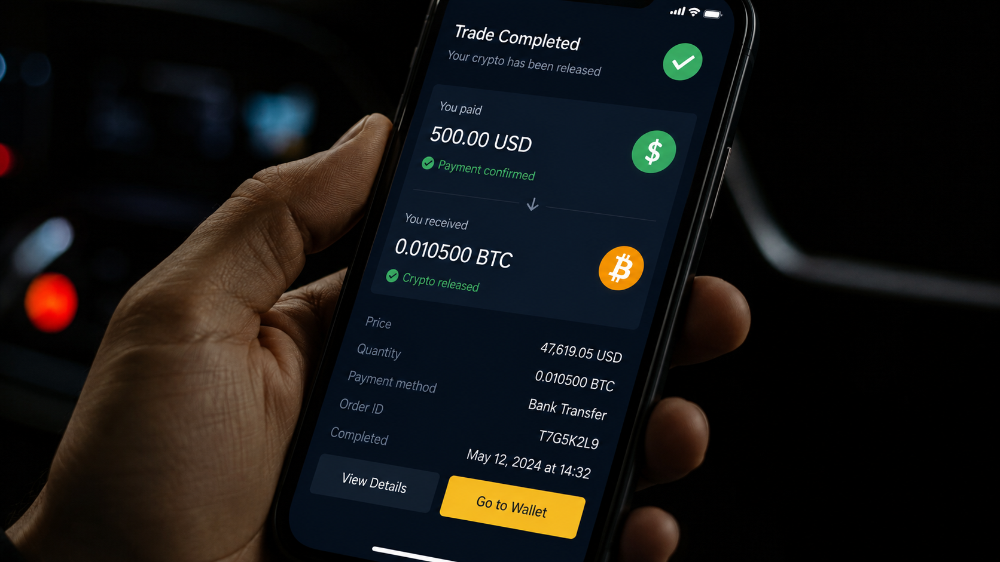
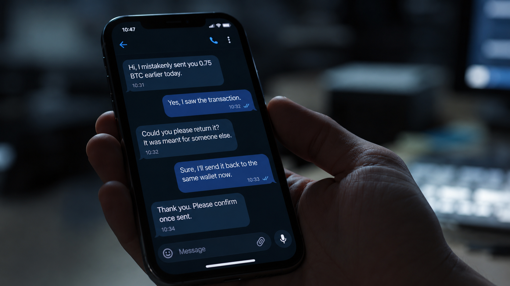
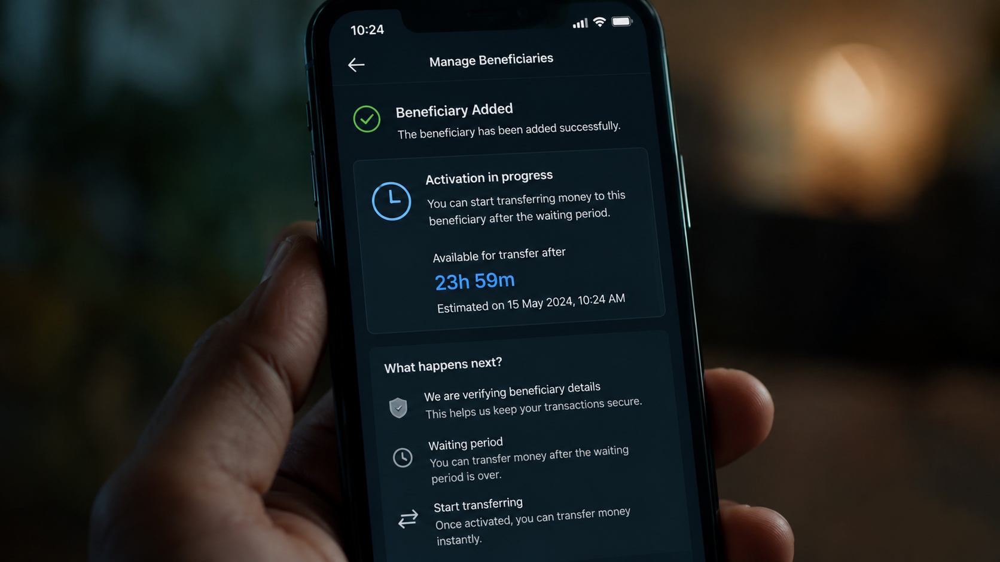
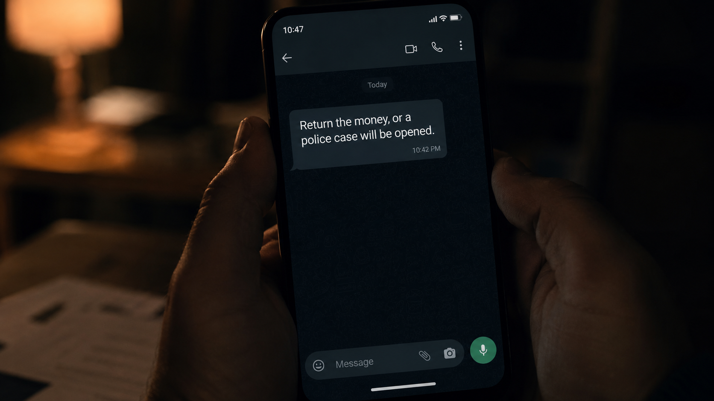
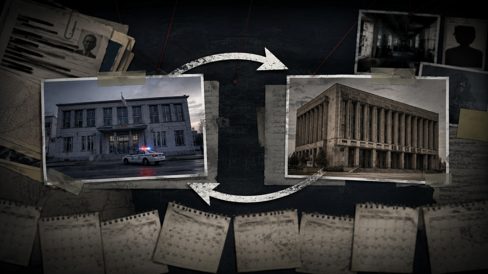
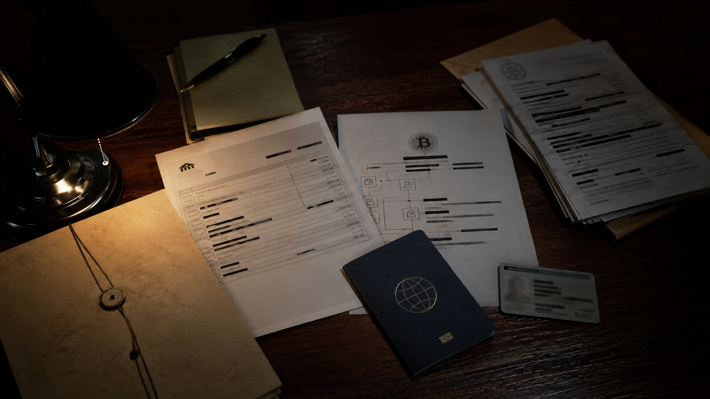

Perception
A public crypto machine
According to the seller, his first crypto experience came through a public machine or kiosk. That shaped his belief that crypto activity was visible and accessible, not hidden.
An anonymized cinematic case file
A $500 off-platform crypto payment. A refund attempt. A police complaint. A travel ban. One and a half years of legal uncertainty.
This page is a documentary-style narrative based on the seller’s account. It is not legal advice and it is not a court finding.
The central conflict
The seller says the first Binance-style P2P transaction was completed normally. Days later, the same buyer sent about $500 directly to the seller’s bank account without creating a new platform order.
The seller says no crypto was released for the second payment. He says he agreed to refund the money, but the buyer was not saved as a bank beneficiary and the refund could not happen instantly.
Perception
According to the seller, his first crypto experience came through a public machine or kiosk. That shaped his belief that crypto activity was visible and accessible, not hidden.

First order
The first transaction was inside the platform order flow: payment received, confirmation made, crypto released, order completed.

Second payment
Days later, the buyer allegedly sent money directly to the bank account, then messaged the seller saying it was for crypto.

Refund delay
The seller says the buyer was not an existing beneficiary, so the refund could not be sent immediately through online banking.
Rules and context
VARA’s public register lists licensed Virtual Asset Service Providers and the specific services they are authorized to offer.
VARA’s register lists Binance FZE with an active VASP licence, issued on 15 April 2024, and permitted investor categories including retail investors.
UAE Central Bank guidance says virtual assets are not acknowledged as legal tender/currency in the UAE; the UAE dirham is the legal tender.
The documentary question is not whether the platform exists. It is what happens when money is sent outside the platform order and outside escrow protection.
Questions raised by the case
If USDT activity is alleged to be illegal in this case, why did the seller see crypto access points and platform services publicly available?
Does public availability create a legal trap for casual users who do not understand the difference between regulated platforms, legal tender, and off-platform transfers?
If there was no second platform order and no crypto was released, should the issue have remained a refund dispute?
If the seller agreed to refund, what clear legal path existed for returning the money once the complaint was filed?
How did a $500 payment lead to custody, travel ban, work permit problems, expired Emirates ID, and one and a half years of uncertainty?

Pressure point
The seller says the buyer was not an existing beneficiary, and the refund needed time. During that waiting period, the buyer allegedly warned that he would open a police case.
Safer wording: “the buyer allegedly threatened legal action.” Do not state that the buyer committed blackmail unless a court or lawyer confirms it.
According to the seller
About one month later, the seller says he received a real call from a Dubai Police Station and attended quickly, without knowing exactly why he had been called.
At the station, he says he admitted that money had entered his account and said he was willing to return it.
Replace this reenactment with a real call record screenshot only if it is legally safe, blurred, and reviewed before publishing.
Case timeline
Order created, payment confirmed, crypto released, no dispute.
About $500 entered the seller’s bank account without a new platform order.
No crypto was released for the second payment, according to the seller.
The buyer was not saved as a bank beneficiary, delaying transfer back.
The buyer allegedly threatened a case, then filed a complaint.
The seller says he attended quickly and accepted that the money had entered his account.
According to the seller, the officer’s duty time ended and he was kept until the next day.
He was released with a travel ban and could not leave the UAE.
The seller says he repeatedly tried to return the money but was sent between authorities.
His company allegedly refused renewal because of the active case.
His residency situation became another crisis while he could not leave.
Hearings were delayed more than once when the judge’s time finished before reaching his matter.
Evidence wall


Final question
He answered the police call. He went to the station. He says he admitted the money had entered his account and agreed to return it.
One and a half years later, he says he is still trapped by one payment sent outside the order.
Was this a crime, or did one off-platform payment turn a refund issue into a life-changing legal crisis?
Public legal context sources
The story itself still needs case documents, lawyer review, and verified evidence before publication.